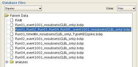

MEG-Clinic
Organizing
your dataset for MEG-Clinic
Original
raw data is available
Original
raw data is not available
Starting MEG-Clinic for the first time
Workflow - MEG Data Acquisition
Clean
an entire record of runs (batch processing)
Workflow - User Defined Events
Define
and/or Review Events (using MNE)
Appendix A MaxFilter Options
Appendix C Neuromag Source Modeling (Xfit)
Appendix D Artifact Rejection Algorithms
Appendix E MRI Segmentation using BrainVisa
Figure
2 main interface window
Figure
4 Workflow files display
Figure
5 Editing the workflow description
Figure
6 MaxFilter configuration
Figure
7 configuration for automatic artifact removal
Figure
8 average description configuration
Figure
9 Xfit command file configuration (raw)
Figure
10 Xfit command file configuration (evoked)
Figure
11 loading a command file into Xfit
Figure
12 merging dipole files
Figure
13 Brainstorm database configuration (default)
Figure
14 Brainstorm database configuration for reasearch
Figure
15 select artifacts on cortical surface
Figure
16 Brainstorm batch import/analysis options
Figure
17 importing raw file into Brainstorm..
Figure
18 importing events into Brainstorm
Figure
19 dipole fitting channel subset description
Figure
20 launch import dialog for T1 MRI
Figure
21 select the MRI data for import
Figure
22 setup dialog for importing T1 MRI
Figure
24 preparing subject for T1 pipeline
Organizing your dataset for
MEG-Clinic
MEC-Clinic
is designed to keep the processing of MEG data consistent and organized. The
data should be arranged into the following directory format to be compatible
with the organization of the MEG-Clinic environment.
Setting up the projects
The
projects can be defined two ways.
- A text file that contains a
list of all projects, one per line.
This file should be in megclinic/config/MEG_Projects.txt. Edit as needed.
- The projects will be determined
from the folders that exist in the directory defined in the setup
configuration, MEG Database Directory. (see Starting MEG-Clinic for the
first time)
Original raw data is available
- Raw data should be in the
following path:
<MEG Database
Directory>/<project>/<subject>/<date>
- SSS data should be in the
following directories
<MEG Database
Directory>/<project>/<subject>/<date>/sss/<run>,
where each recording is in a separate folder.
MEG-Clinic will organize its database
according to these folders in the /sss directory and/or the raw recordings.
Original raw data is not
available
SSS data should be in the following directories
<MEG Database
Directory>/<project>/<subject>/<date>/sss/<run>,
where each recording is in a separate folder.
MEG-Clinic will organize its database
according to these folders in the /sss directory
Starting MEG-Clinic for the first
time
- Start Matlab, go to megclinic
directory and type meg_clinic(setup) in the Matlab command window.
- The setup dialog will appear (Figure 1). The fields
are populated with the defaults for the MEG lab at MCW. Update as needed:
- MEG-Clinic Home Directory path
of megclinic folder
- View Raw: command to start
mne_browse_raw
- MNE: command to start
mne_browse_raw
- MNE Matlab toolbox: path
to MNE toolbox
- MRI Segmentation: command
to start Brainvisa
- Brainstorm Path: path
to Brainstorm3
- DICOM Access: command
to start Neuromag DICOM Access
- Dipole Fitting: command
to start Neuromag xfit
- Preprocessing: command
to start Neuromag MaxFilter
- MEG Data: path to MEG data
- MRI Database: path
to MRI database
- Brainstorm Database: path
to Brainstorm database
- Click Accept. A configuration file is saved in the
user home directory. This setup
does not need to be run again unless the configuration file is deleted.

Figure 1 Setup Configuration
Main interface window
Start Matlab, go the megclinic directory and type meg_clinic in the
Matlab command window. The main
interface window will appear (Figure
2).
Figure 2 main interface window
Select a record
- The record selection has three
dropdown boxes.
- The first box is the
project. The projects are defined
by the project list (see Organizing your dataset) or the folder
contained in the defined MEG database root directory. If the project is
not in the list, select New Project, then select the project folder that contains the dataset.
- Select the desired subject from
the second box.
- Select the desired date from
the third box.
- The database tree should now be
populated with the recordings associated with the selected record. If the recordings are not organized into
separate run folders, this will be done automatically before the data is
displayed.
Navigating the database tree
- Each dataset is divided into
MEG data, brainstorm database and analyses.
- The MEG data is divided into
runs. Each run is organized into
a separate folder. Each run folder
contains any file iterations of the original data (raw files remain in the
root folder), an xfit folder for dipole fitting results, event files and
averaging descriptions. These files
can be viewed by expanding the run folders in the database tree
- The brainstorm database is not
visible from MEG-Clinic, but is organized with the brainstorm application.
- The analyses folder contains image
results from the workflow. These
results can be viewed by expanding the analyses folder in the database
tree.
- Files contained in the RAW
folder are the original recordings.
These files can be selected for running MaxFilter (see MEG Data
Acquisition). These files cannot
be used in any other part of the workflow.
These files cannot be deleted.
Updating
the tree
The database tree can be updated after changes to the
subject data have been made by:
- Select a folder and click Update at the bottom of the database
tree panel. Only this folder will
be updated.
- Select Patient Data node at the top of the
database tree and click Update at the bottom of the database tree panel. The entire dataset will be updated.
Viewing the files
To open and
view files in the database tree there are several options:
- To view recordings: Select a
.fif file. Select Review at the bottom of the database
tree panel. The raw viewer will
open with the selected file.
- To view text files (.ave, .log,
.eve, .txt): Select a text file.
Right click over the file and select View Selected Text File from the menu. For Linux, gedit editor will open with
the text file (windows text editor is not support at this time).
- To view image files (i.e. jpg, tif,
png, bmp): Select an image file.
Right click over the file and select Render Selected Image File from the menu. Matlab will render the image. To determine which image file formats
are supported by Matlab, enter imformats in the Matlab command window.
- To delete a file: Select the
file(s). Press Ctrl to select several files. Right click and select Delete Selected
File(s). A confirmation prompt will appear for
the user to review the files before deleting. Select YES to delete the files or No to return to the database tree
without deleting.
- To rename a file: Select the
file, Right click and select Rename Selected File. Enter the new name and select
OK.
- To view the acquisition notes
in SessionLog.txt select View SessionLog at the bottom of the database tree panel.
Navigating the workflow
The
workflow is divided into 7 sections (Figure 3). Each section
contains buttons for configuring and executing a process in the workflow. The buttons can be in 4 states:
- Disabled The process is not
yet available for execution in the workflow.
- Red This process is ready to
be run.
- Green This process has been
completed.
- Orange This process is
optional.
Figure 3 Workflow panel
The
workflow is defined by the file types available in the database tree.
- The defined workflow can be
viewed by selecting View
Workflow Files in
the toolbar at the top of the main interface window (Figure 4).
- The workflow can be changed by selecting
Edit
Workflow at the
bottom of the Workflow Files Display (Figure 5).
- From the Workflow Description
dialog, select the description type to update from the drop down menu at
the top. Select Browse to search for the new file
name or enter the file name directly.
- Select Accept to accept the changes. Select Close to hide the window and return to the Workflow
Files dialog.
- Changes made to the workflow
can be saved by selecting Save
at the bottom of the database tree panel.
Figure 4 Workflow files display
Figure
5
Editing the workflow description
Workflow - MEG Data Acquisition
This
section contains two processes in the workflow.
Run MaxFilter
Neuromag
MaxFilter software is run to perform Signal
Space Separation (SSS) on the raw MEG data.
This step is a necessary step for all recordings collected at MCW.
When the
data is collected, MaxFilter is run automatically for each record upon
saving. Therefore all of the recordings
should have an associated file ending in _raw_sss.fif
and _ave_sss.fif (for evoked files).
If these
files do not exist in the dataset or is it necessary to re-run MaxFilter with
alternate settings, the following procedure can be followed:
- Select the raw file for
processing
- Select Configure in the workflow panel. A configuration dialog will open (Figure 6). Select
the type of SSS options desired for processing (See Appendix A for details
on options). Click Accept.
Figure 6 MaxFilter configuration
- Select Run MaxFilter from the workflow panel. A progress bar will appear.
Review Raw Data
This
process is optional, but is a good idea to ensure the quality of the data.
- Select a _raw_sss.fif file from the database tree.
- Select Review Raw Data. The raw viewer will open the selected
file.
Workflow - Remove Artifacts
These steps
in the workflow provide data cleaning.
This cleaning consists of removing ECG and EOG artifacts, ongoing
artifacts (such as respiration) and tools for removing other artifacts.
Automatic Cleaning
Clean an individual run
- Select a _raw_sss.fif file from the database tree.
- Select Automatic Cleaning from the workflow. This will perform the default ECG and
EOG cleaning.
- For runs that contain an ECG
channel, the QRS events are detected.
If no ECG channel is available, an optional MEG channel can be
selected to identify ECG artifacts.
The result is a _ecg-eve.fif
file. (See Appendix D for artifact event detection algorithms)
- For runs that contain an EOG
channel, the prominent eye blink morphology is detected and these
matching event times are stored in _eog-eve.fif
file.
- MNE is used to perform Signal Source Projection (SSP)
using the identified events. The
results are a _ecg-proj.fif and
_eog-proj.fif files. Once determined, these projections are
applied to the data and a clean file is saved. These files can be identified by the
extension _ecgClean_raw.fif,
_eogClean_raw.fif, or when both are applied, _xtraClean_raw.fif.
- Configure this cleaning using
the Configuration for Automatic Artifact Removal dialog by selecting Configure from the Remove Artifacts
Panel (Figure 7).
- Ongoing Artifacts can be
removed by selecting the options in the lower left panel. The result is a _ongoing-proj.fif file.
This projection is applied and an intermediate file is created,
identified by _ongoingClean_raw.fif. If additional artifact cleaning is
requested, this intermediate file is used to calculate SSP projections
for Heartbeat and/or Eye blink artifacts.
These projections are then applied to the ongoing cleaned file and
result in a file with extension _xtraClean_raw.fif.
- Heartbeat artifact removal and
Eye blink artifact removal can be configured by selecting options in the top
panels. If one type is selected,
the resulting clean file is named accordingly (_ecgClean_raw.fif or _eogClean_raw.fif). If two types are selected, the
resulting clean file will have the name extension _xtraClean_raw.fif.
- When selections are complete,
click Clean
Selected File.

Figure 7 configuration for automatic artifact
removal
Clean an entire record of runs
(batch processing)
After data
acquisition is complete, SessionLog automatically launches a batch cleaning of
all runs in the record. If this cleaning
fails or it is necessary to re-run the batch cleaning with a revised
configuration, batch processing can be started several ways:
- To perform default ECG cleaning,
choose one of the following **:
- From the Matlab command
window, type:
meg_clinic(clean,/<MEGdatabase>/<project>/<subject>/<date>)
- From the Remove Artifacts
Panel, select Clean
All
- Configure this cleaning using
the Configuration for Automatic Artifact Removal dialog by selecting Configure from the Remove Artifacts
Panel. When selections are
complete, select Clean
All.
**Note: Once the
default configuration has been changed via the configuration dialog, the new
settings persist until a new subject record is loaded, or the default settings
are restored.
Review Cleaned Data
This
process is optional, but is a good idea to ensure the quality of the clean
data.
- Adjust Database Tree file
filters (View: files, clean + dipole)
- Select a clean file from the database tree.
- Select Review Raw Data from the Remove Artifacts
Panel. The raw viewer will open the
selected file.
- Helpful adjustments,
Adjust>scales
Manual Cleaning
This
process is optional, but can be used to help remove additional artifacts.
- Select a clean file from the
database tree.
- Select Remove Artifacts. mne_browse_raw
will open the selected file.
- Select the events manually. Label these events starting with event
number 700. Create a new event for each different type of artifact.
- Create SSP projections. Process>Create a new SSP operator. Select the start/end times to ensure
capturing your artifact, typically [-0.1, 0.1] and the number of your
event.
- Select the projections to apply
typically one each of axial and planar.
- Save the projections to a
proj.fif file (File>Save
projection...) so
they can be applied or removed at another time.
- Remove the filtering (Adjust>filter,
uncheck Filter active) and save the newly cleaned file to a variation of _xtraClean_raw.fif.
Average Clean Data
Cleaned raw
data can be averaged offline using MNE. During
cleaning, an average description file is created for those runs that contain
event information on the stimulus channels (STI101 and STI102). This description file is then used by MNE to
create a clean evoked file.
- Select a clean file from the
database tree.
- Select Average Clean Data. The result file will have the extension _ave.fif
- The average description file
can be edited to define new averaging parameters. Select the average
description file (*.ave). Right click over the file and select View Selected Text File from the drop down menu. Averaging can also be performed using an
event file (events defined outside of the STI channel), see the following
section, User Defined Events.
Workflow - User Defined Events
The
recorded data can be reviewed and user defined events can be saved and
averaged. This section contains optional
processes in the workflow. Events
defined using MNE or other software should end with the extention .eve or annot.fif. The .eve text
files should be compatible with the MNE format (see MNE manual for further explanation).
Define and/or Review Events
(using MNE)
- Select a clean file from the
database tree. Select Define Events from the User Defined Events panel.
- MNE will open.
- Adjust>Filter: Set the filter for [5, 40] Hz.
- Set the viewer and epoch
times.
- Adjust>scales: MEG (ft/m) = 300, Time span
(s) = 10.0, Segment min/max time (s) = [-0.15, 0.15], checkbox Show
segments in full view
- Adjust>Full view
layout:
Vectorview-mag
- Windows>Show full
view...
- Mark events using the annotator
or save user defined events to a text file.
- Alternatively, review events
saved in the annotator. Windows>Show
annotator... Click
through events to have a clear idea of the spike types and morphologies.
Average Events
Events
defined in these event files can be averaged off-line and saved to an evoked
file.
- Select a clean file from the
database tree.
- Select Configure from the User Defined Events
panel. A dialog will open (Figure 8).
Figure 8 average description configuration
- Select a protocol from the drop
down box at the top. The field will
be populated with the defaults for this protocol. Protocols can be added to the list (see
megclinic/config/task_defaults.xml).
- Select the event file (*.eve) that contains the events.
- Adjust any parameters as
needed.
- Select Average Events. When averaging is complete the result
files will be the average description file, *.ave, the average log file, *.log, and the averaged data file,*_ave.fif.
Workflow - MRI
MRI Segmentation
The
location of the subjects MRI must be defined.
- Select MRI Segmentation. A file-chooser dialog will
open.
- Select the location of the
patients MRI data: <MRI_database>/<protocol>/<SUBJECT_name>
- If the cortical surface has not
been defined (the /t1mri folder does not exist), then BrainVISA will open.
- Complete this process with
BrainVISA.
- If segmentation has been
completed using Freesurfer, the MRI file and surfaces should be saved to
the folder defined in Step 2.
Workflow - Dipole Fitting
Dipole
fitting is performed using Neuromag Source Modeling software (xfit). MEG-Clinic facilitates the creation of a
command file (*.cfit) that can be
loaded into xfit. The results of the fit
are saved to a *.bdip file and then
imported into Brainstorm for visualization.
Create Command File
- Select a clean file in the database tree.
- Select Create Command File from the Dipole Fitting panel. A dialog will open.
Figure 9 Xfit command file configuration (raw)
Figure 10 Xfit command file configuration (evoked)
- For raw files (Figure 9), dipole fitting can be done over the entire
record (in 10 second chunks) or over specific time windows (events)
- Select an event file if one is
not already selected for you (MEG-Clinic will automatically select the *-annot.fif file if one exists.)
- Select the event number or All. A separate .cfit file needs to be created for each event type.
- Select the time window over
which the fits should be performed.
- For evoked files (Figure 10), dipole fitting is done over the time window of
the evoked data
- Select a baseline
- Select a time window over
which the fits should be performed (optional)
- The fit interval, filtering and
use of channel subsets can all be defined.
See Appendix C for the definition of the channel subsets.
- Select Create Command File. The result is a .cfit file deposited in the /xfit folder.
- Xfit will open automatically
(an equal number of Xfit processes will open to the number of command
files created). Press F11. A command dialog will open (Figure 11).
Figure 11 loading a command file into Xfit
- Right click over the Command
Interpreter. Click open. Navigate to the /xfit folder in the selected
run. Select the .cfit file that was created. Click Load.
- Right click over the Command
Interpreter again and click Do All.
- Dipole fitting will proceed and
the dipoles will be saved in the /xfit folder with the extension *.bdip.
- Repeat the procedure for all .cfit files.
Merge
Dipole Files
- Filter database files by selecting View: Files from the dropdown list in the upper right
corner of the Database Files Tree.
Next, select Dipoles from the dropdown list in the upper left corner
of the Database Files Tree.
- Select the dipole files to merge (these must all
be similar types and similar fit configurations). (Figure
12)
- Right click over the files and select Merge Selected Dipole Files from the menu.
- A dialog box will open with a list of files to
merge and the name of the resulting output file. Adjust the output name as needed. Click Merge.
- Repeat for each event type where more than one
dipole file exists.

Figure 12 merging dipole files
Generate Images
This is
done using Brainstorm. See Dipole Visualization Tutorial.
Workflow - Brainstorm
MEG-Clinic
is designed to streamline the process of importing and processing data using
Brainstorm. Through a set of scripts
defined in brainstorm, the user can directory import MRI and MEG data via the
main interface window of MEG-Clinic.
These imports can be done in a batch fashion to reduce the amount of
time the user spends interacting with the software.
A database
entry is automatically created if one does not exist.
- By default, MEG-Clinic
organizes the brainstorm database such that each subject will have a
separate brainstorm_db folder (Figure 13). This
results in an entry in the MEG database in the following form:
/<MEGdatabase>/<project>/<subject>/brainstorm_db/anat/<subject>
/<MEGdatabase>/<project>/<subject>/brainstorm_db/data/<subject>
- The new protocol is named:
<project>_<subject> (e.g. epilepsy_last_first)
Figure 13 Brainstorm database configuration (default)
- In the case where it is more
practical to have several subjects defined under one protocol (i.e.
research), the database configuration can be defined.
- Select Configure from the Brainstorm Interface
panel (Figure 14)
- Select the checkbox for One database protocol
for many subjects
- Click Accept
Figure 14 Brainstorm database configuration for reasearch
Import MRI and Surfaces
Once the MRI Segmentation is complete and the
location is defined, the MRI can be imported into Brainstorm.
- Select Import MRI &
Surfaces from the Brainstorm Interface
panel
- MEG-Clinic searches the path
defined in the workflow.
- BrainVisa: It searches the
path for MRI files ending in .ima or .nii respectively. It searches the path for surface files
ending in _head.mesh, _Lhemi.mesh, _Rhemi.mesh, _Lwhite.mesh,
_Rwhite.mesh
- FreeSurfer: It searches the
path for MRI file T!.mgz. It
searches the path for surface files lh.pial, rh.pial, lh.white, rh.white,
and files with names containing inner_skull and outer_skin.
- If necessary files are not
found, the user is prompted to select the files.
- Once the MRI is imported, an
MRI viewer will open. Mark
landmarks (for guidance, see Coordinate
Systems). Save.
- To adjust brightness, right
click over the image, select Colormap:Anatomy>Brightness, adjust as needed.
- To save screen shots of the
anatomy, right click over the image, select Snapshot>Save as image
Import Defaults
|
Byte Order |
Little
Endian |
|
Mesh
files for default cortex surface |
white |
|
Downsample
scalp file |
8000 |
|
Downsample
cortex files |
15000 |
Clean-up Cortical Surface
If
artifacts appear on the cortical surface, Brainstorm can be used to remove
these vertices:
- Open Brain_white_HD (right
click>Display)
- Open the Scout tab. Using the crosshair (+) select the
external part of the artifact.
Select the entire artifact by adjusting the selected vertices using
<< < > >>. (see Figure 15)
- From the scout panel, select Edit>Remove vertices, when prompted, select Yes.
- Delete the existing Brain_white_HD_15000V
file.
- Select Brain_white_HD, right click, select Less Vertices and enter 15000.
Figure 15 select artifacts on cortical surface
Import MEG Files
Files can
be imported into brainstorm two ways:
Import File
- Select one file from the
database tree (raw, evoked, dipoles*)
- Click Import File from the Brainstorm Interface
panel. The user is prompted for
importing.
*Note: When selecting a dipole file for import, a reference
clean file must also be selected to inform MEG-Clinic where to place the dipole
file in Brainstorm.
Batch Analysis
This button
allows the user to select one or several files to import and run analyses in a
batch routine. The user will be prompted
to guide the importing of the data, but then the analysis will run
automatically in the background.
- Select one or several files to
import (raw, evoked)
- Select Batch Analysis from the Brainstorm Interface
panel. An options dialog will open
(Figure 16).
Figure 16 Brainstorm batch import/analysis options
- Select the processes to run on
the files. Event-related analyses
require importing events defined in either the *.-annot.fif file or other user defined file. Ongoing brain analyses require importing
raw data (in 2 second segments).
- Select Import and Analysis.
- Follow the MEG-Clinic message
window to import all the files.
For Example:
The MEG-Clinic message area reads:
Brainstorm Import
Raw: <file>
a. This means the file will first be
imported as a raw file (
b. This step should be done
automatically without input from the user.
However some circumstances may require input (Figure
17). If the FIF event
file dialog appears, select Ignore. The following Options dialog will
appear. Select Import.
The run will be imported into the brainstorm database in brainstorm
format.
Figure 17 importing raw file into Brainstorm
The MEG-Clinic message area reads:
Brainstorm Import
Events: <file>
c. This means the file will first be
imported in event epochs (
d. This step should be complete automatically
without user input if an event file is available.
e. If an event file is not found by the
automatic search, the user must define the event file. The FIF event file
dialog will appear (Figure 18), select Other file. Select the event
file (.eve or annot.fif). Click Open.
The following Options dialog will appear.
f.
Select
events from the Events selection panel (do not select Event #0 since this is
the dummy event found in the .eve files of MNE format event files).
g. Uncheck Create new conditions for
epochs for importing
the events into the study location.
h. Check Remove DC offset, and select Time range
i.
Select Import.
The run will be imported into the brainstorm database in brainstorm
format.
Figure 18 importing events into Brainstorm
- The head model, noise
covariance and source analysis are done automatically. The defaults are as follows:
Head
Model: Overlapping
spheres| 3-shell Sphere (BERG)
Noise Covariance: The noise covariance will be
determined from an empty room recording.
The location of this recording is as follows:
1. An empty room recording exists in
the current MEG data set. It is imported
into Brainstorm and a noise covariance matrix is calculated. This noise
covariance is used for all other runs in the record
2. An empty room recording does not
exist in the current MEG data set. A
default empty room recording protocol should be created in the current
brainstorm database with the name: epilepsy_empty_room. The empty_room_supine_raw_sss and
empty_room_upright_raw_sss should be imported into this protocol and the noise
covariance calculated. This default can
then be used for records that do not contain an empty room recording.
Source Estimation: Minimum Norm (MN: shared kernel)
- The selected processes will
then run automatically and generate output images. The images are saved in the /analyses
folder for the record. The default parameters for the images are as
follows:
MRI Viewer
ReadOnly
Colormap Source
DataSource.Type Results
DataThreshold 0.0
DataAlpha (transparency) 0.4
MIP Functional on
Sliders off
Radiological on
Save images as:
<projet>/<subject>/<date>/sss/analyses/<resultcomment>.jpg
- If Spectral Analysis is
selected, an additional dataset and image files are generated from a
weighted average across all runs. (inter-subject)
Workflow - Generate Report
Generate Report
A report
generator is currently in development for MCW.
Appendix A MaxFilter Options
Default sss
/neuro/bin/util/maxfilter
-gui -f <dir>/<file>.fif -o <dir>/sss/<file>_sss.fif
-ctc /neuro/databases/ctc/ct_sparse.fif -cal /neuro/databases/sss/sss_cal.dat
-autobad off
cHPI sss
/neuro/bin/util/maxfilter
-gui -f <dir>/<file>.fif -o <dir>/sss/<file>_cHPIsss.fif
-ctc /neuro/databases/ctc/ct_sparse.fif -cal /neuro/databases/sss/sss_cal.dat
-autobad off -trans default -movecomp -hpistep 150 -hpisubt amp -hp
<dir>/sss/<file>.pos
tsss
/neuro/bin/util/maxfilter
-gui -f <dir>/<file>.fif -o <dir>/sss/<file>_tsss.fif
-ctc /neuro/databases/ctc/ct_sparse.fif -cal /neuro/databases/sss/sss_cal.dat
-autobad off -st 4 -corr 0.9
Default Head Model sss
/neuro/bin/util/maxfilter
-gui -f <dir>/<file>.fif -o
<dir>/sss/<file>_defaultHead_sss.fif -ctc /neuro/databases/ctc/ct_sparse.fif
-cal /neuro/databases/sss/sss_cal.dat -autobad off -origin 0.00 0.00 40.00
-frame head
No sss
/neuro/bin/util/maxfilter
-gui -f <file>.fif -o /sss/<file>_nosss.fif -ctc
/neuro/databases/ctc/ct_sparse.fif -cal /neuro/databases/sss/sss_cal.dat
-autobad off -nosss
Appendix B MRI Fiff File
The MRI
should be saved as a FIFF file for use in Xfit.
If the
DICOM images have not been downloaded to MRI_database...
- Create a folder:
/MEG_data/MRI_database/<project>/LASTNAME_First/DICOM
- From megana1, start DICOM
Access
Source: HSERV6
Get: Navigate to directory just
created
If the
DICOM images have been downloaded to MRI_database...
- Create a folder:
/MEG_data/MRI_database/<project>/LASTNAME_First/fifmri
- Start DICOM Access
Source: Directory
Navigate to
/MEG_data/MRI_database/<project>/LASTNAME_First/DICOM
Select DICOM Part 10
Get: Navigate to directory just
created, the FIFF file will be saved in /sets
- Start MRI_MEG_Integration
Open
*/fifmri/sets/<mri_file_name>.fif
From the Windows Menu, select
landmarks
Mark anatomical landmarks
Save
Appendix C Neuromag Source
Modeling (Xfit)
Channel Subsets
Dipole
fitting can be performed with a subset of channels or a global fit.
- Subsets are defined in a text
file $HOME/.meg_analysis/xfit_selections.
- A copy of the default subsets
for MEG-Clinic are defined in megclinic/config/xfit_selections. This file can be copied to the
.meg_analysis folder for each user.
- The text file is formatted
according to the Neuromag Users Manual
<name> : <bad channel
list*> : <ignored channels>
*bad channel list is not defined in
the default file, so -1 is inserted for that list.
Figure 19 dipole fitting channel subset description
Appendix D Artifact Rejection
Algorithms
QRS
Detection
ECG
channel is read from data file
Signal
is band-pass-filtered [5, 35] Hz
Threshold
is applied to absolute value of the filtered signal.
Initial
max is the mean of the maximum of each of the first three seconds
Threshold
is 60% of initial maximum
QRS is
accepted as event if:
Peak
exceeds the threshold
Number
of threshold crossings in the event window is < 3
RMS of
the event window is < mean RMS + 2.5*std for all events
Only
the first 50 events are used for SSP calculations. A minimum of 10 events is needed for this
calculation.
Eye
Blink Detection
EOG
channel is read from data file
Signal
is band-pass-filtered [1.5, 15] Hz
Threshold
is applied to absolute value of the filtered signal.
Initial
max is the mean of the maximum of each of the first 5 seconds
Threshold
is 80% of initial maximum
Eye
blink is accepted as event if:
Peak
exceeds the threshold
Number
of threshold crossings in the event window is < 3
The
magnitude of the event is > 85 uV
The
events are sorted by morphology and the blink type with the most events is used
for SSP calculations. A minimum of 5
events is needed for this calculation.
Appendix
E MRI Segmentation using BrainVisa
Launch
BrainVisa
- From
MEG-Clinic
- If the
MRI Segmentation button is red, click the button and select the subject
from the MRI_database. BrainVisa
will be launched automatically.
- If the
MRI Segmentation button is green or BrainVisa did not launch
automatically proceed to next option.
- From
megneto VNC
- open a
terminal
- at the
prompt, type brainvisa
- From
megana1
- open a
terminal
- login
to megneto (i.e ssh X meg2@megneto)
- at the
prompt, type brainvisa &
MRI Import
- Select T1
MRI from the Toolboxes menu
- Expand import menu item and select Import T1 MRI
- Click Open (Figure 20).
Figure 20 launch import dialog for T1 MRI
- In the dialog box, click on folder icon
- Navigate to the subjects DICOM folder (in the
MRI_database) and select the first *.dcm file in list (Figure 21), click Open.
- In the dialog box, click the black eye
icon. Verify the brain and ears are
visible on the MRI.
Figure 21 select the MRI data for import
- In the dialog box, click on the red barrel icon
- Populate the dialog with the subjects
information (Figure 22). Be sure
to follow the subjects naming convention LASTNAME_First. Click OK.
- Click Run.
- When the
import is complete, close the open dialog.
Figure 22 setup dialog for importing T1 MRI
MRI Segmentation
- Select T1
MRI from the Toolboxes menu
- Expand Segmentation
Pipeline menu item and select T1 Pipeline 2007
- Click Open (Figure 23).
Figure 23 open T1 pipeline
- Checkbox SulciRegcognition should be checked
- Select T1
Pipeline 2007 from the left-hand
Name menu
- Select the green cylinder, select the
Protocol/Subject from the database dialog.
Click OK.
- Select AC/PC
Or Normalization from the left-hand
Name menu
- Confirm allow_flip_initial_MRI:
true
- Select Prepare
Subject for Anatomical Pipeline
from the left-hand Name menu (Figure 24)
Figure 24 preparing subject for T1 pipeline
- Click the
black eye icon after T1mri:
- Mark
anatomical landmarks:
- ant commissure-go to white line(ventricles
disappear) click on head icon
- post commissure-behind ant, where dark line is
finished (can use arrow keys to move)
- interhemispheric-view whole brain/hemispheres,
select center
- left hemisphere point (click on right side of MRI)
- Click
Run.
- When the
blue arrow completes Head
Mesh, review results.
- Select Grey while Interface from the left-hand
Name menu
- Click the black eye icon to review LGW (left
gray white) and RGW (right gray white).